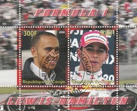

Democratic Republic of the Congo
 |
 Issue date: 2005 Senna is regarded as one of the greatest drivers in the history of Formula One. In 2009, a poll of 217 current and former Formula One drivers chose Senna as their greatest Formula One driver, in a survey conducted by British magazine Autosport. He was recognised for his qualifying speed over one lap and from 1989 until 2006 held the record for most pole positions. He was among the most talented drivers in extremely rain-affected conditions, as shown by his performances in the 1984 Monaco Grand Prix, the 1985 Portuguese Grand Prix, and the 1993 European Grand Prix. He also holds the record for most victories at the prestigious Monaco Grand Prix (6) and is the third most successful driver of all time in terms of race wins. However, Senna courted controversy throughout his career, particularly during his turbulent rivalry with Alain Prost, which was marked by two championship-deciding collisions at the 1989 and 1990 Japanese Grands Prix.  Issue date: 2005 During the late 1980s and early 1990s, Prost formed a fierce rivalry with Ayrton Senna, Nelson Piquet and Nigel Mansell. In 1986, at the last race of the season, he managed to pip Mansell and Piquet of Williams to the title. Senna joined Prost at McLaren in 1988 and the two had a series of controversial clashes, including a collision at the 1989 Japanese Grand Prix that gave Prost his third Drivers' Championship. A year later at the same venue they collided again, but this time Prost, driving for Ferrari, lost out. Before the end of a winless 1991 season Prost was fired by Ferrari for his public criticism of the team. After a sabbatical in 1992, Prost joined the Williams team, prompting reigning drivers' champion Mansell to leave for CART. With a competitive car, Prost won the 1993 championship but he retired at the end of the year rather than be teammates with Senna who signed for 1994. Prost employed a smooth, relaxed style behind the wheel, deliberately modeling himself on personal heroes like Jackie Stewart and Jim Clark. He was nicknamed 'The Professor' for his intellectual approach to competition. Skilled at setting up his car for race conditions, Prost would often conserve his brakes and tyres early on in a race, leaving them fresher for a challenge at the end of the race.  Issue date: 2007 Eddie Irvine and the Ferrari F399 at the 1999 Monaco Grand Prix: Irvine came second to Schumacher. Michael Schumacher and the Ferrari F2003-GA at the 2003 Monaco Grand Prix: Schumacher came third.  Issue date: 2006 A set of un-gummed labels showing F1 drives and their cars: Michael Schumacher / Ferrari: Schumacher drove for Ferrari from 1996 to 2006, winning the drivers championship five times in those eleven years. Juan Pablo Montoya / McLaren: Montoya drove for McLaren in 2005 and 2006 after a 4 year stint with BMW Williams. Kimi Raikkonen / McLaren: Raikkonen drove for McLaren from 2002 to 2006, his best result for McLaren was runner up in the drivers championship in 2003 and 2005. Fernando Alonso / Renault: Alonso drove for Renault from 2003 to 2009 (except for 2007 when he partnered Lewis Hamilton at McLaren), winning the drivers title in 2005 and 2006. Issue date: 2007 Ayrton Senna and the McLaren MP4/8 at the 1993 Monaco Grand Prix: Senna won the race. Mika Hakkinen and the McLaren MP4/14 at the 1999 Monaco Grand Prix: Hakkinen came third behind the two Ferraris. Issue date: 2007 A miniature sheet showing various Ferrari cars, which includes the Ferrari 246 F1. The Ferrari 246 F1 was a Ferrari racing car built for the Formula One World Championship of 1958. The 246 used a 2417 cc Dino V6 engine with a 65degree angle between the cylinder banks. This was the first use of a V6 engine in a Formula One car, but otherwise the 246 was a conventional front engine design. The Ferrari 246 was good enough to win a World Championship for Mike Hawthorn and a second place in the Constructors Championship for Ferrari. The Ferrari 246 was not only the first V6 engined car to win a Formula One Grand Prix, the French Grand Prix at Reims in 1958, it was also the last front engined car to win a Formula One Grand Prix. This occurred at the 1960 Italian Grand Prix at Monza, where the major British teams boycotted the race. In 1960, the Ferrari 246 designation was also used for the first mid-engined Ferrari, the 246P Formula One car, again using a Dino V6 engine of 2417 cc.  Issue date: 2008 A two stamp sheet showing Lewis Hamilton. In his first season in Formula One, Hamilton set numerous records (most poles in a debut season - 6, most wins in a debut season - 4, and most points in a debut season - 109) and finished second in the 2007 Formula One Championship, just one point behind Kimi Raikkonen. He won his first World Championship the following season, ahead of Felipe Massa by the same margin of a single point, becoming the youngest even F1 world champion (at 23 years and 300 days). Hamilton has a long standing association the McLaren team, for which he drives.  Issue date: 2009 A miniature sheet containing 4 stamps depicting the McLaren MP4/22; it was revealed in testing at Circuit de Valencia in Spain on 15 January 2007. In its first race, the 2007 Australian Grand Prix at Melbourne, the car achieved second and fourth in qualifying and second and third places in the race, in the hands of Fernando Alonso and Lewis Hamilton. In its design philosophy behind the new car, the team says the MP4/22 features "some advanced engineering concepts" and "novel aerodynamic solutions". On 17 January 2007, Fernando Alonso completed a shakedown test in the Ricardo Tormo circuit in Valencia, setting the fastest lap time of 1:12.050. The MP4/22 has proved to be far more competitive than its similar looking predecessor and McLaren scored 8 victories, unlike in 2006. The car proved to be the most reliable car of the season, with no mechanical retirements in the first 15 races, and one of the two fastest cars on the field (along with the Ferraris). The low downforce package of the MP4/22 was extremely competitive. McLaren, with the aid of their improved car, scored as many team points in the first half of 2007 as they had done during the entire year in 2006.  Issue date: 2003 A mini sheet of two values showing two different Ferrari F1 cars. In the 2003 season, Michael Schumacher and Rubens Barrichello started off the season with the F2002 before moving to the F2003-GA Ferrari. Michael Schumacher won the drives title (2 points ahead of Kimi Raikkonen in the McLaren MP4-17D). Ferrari also won the constructors title (14 points ahead of the BMW Williams F1 team in second place).  Issue date: 2003 A mini sheet of six values showing various Ferrari F1 cars. The Scuderia Ferrari team was founded by Enzo Ferrari in 1929 and became the racing team of Alfa Romeo, building and racing cars under the Alfa name. In 1938, Alfa Romeo management made the decision to enter racing under its own name, establishing the Alfa Corse organisation, which adsorbed what had been Scuderia Ferrari. Enzo Ferrari disagreed with this change in policy and was finally dismissed by Alfa in 1939. The terms of his leaving forbade him from motorsport under his own name, for a period of four years. In 1947 Ferrari constructed the 12-cylinder, 1.5 L Tipo 125, the first racing car to bear the Ferrari name. A Formula One version of the Tipo 125, the Ferrari 125 F1 was developed in 1948 and entered in several Grand Prix, at the time a World Championship had not yet been established. In 1950, the Formula One World Championship was established, and Scuderia Ferrari entered in this first season. It is the only team to have competed in every season of the World Championship, from its inception to the current day. Issue date: 2004 A mini sheet of two values featuring the Ferrari F1 team. In 2004, Ferrari clinched both the drivers' title and the constructors championship for a fifth consecutive year - in all cases it was Michael Schumacher who won the drivers' championship.  Issue date: 2005 A mini sheet commemorating Ayrton Senna, 1960 to 1994. The three time world champion drove for Toleman, Lotus, McLaren and Williams in his 10 year Formula 1 career. After Senna's death it was discovered that he had donated millions of dollars of his personal fortune (estimated at $400 million at the time of his death) to children's charities, a fact that during his life he had kept secret.  Issue date: 2005 A sheet of five values featuring Concorde and Ayrton Senna and Alain Prost.  Issue date: 2005 A mini sheet of six values showing various F1 cars.  Issue date: 2005 A mini sheet with one value featuring Ferrari F1 cars.  Issue date: 2008 A mini sheet with two values featuring Felipe Massa. Felipe Massa started driving for Ferrari in 2006 (having previously spent three years with Sauber). His best result to date came in 2008 when he was runner up in the drivers' championship - just losing out to Lewis Hamilton in a dramatic end to the season at the Brazilian Grand Prix. Going into the last lap, if the order stayed as it was, then Massa would have been champion. Massa crossed the chequered flag first and thought that he had won the championship. Hamilton was sixth as he came up to the second-to-last corner, but then passed Glock who had just been overtaken by Vettel and who was struggling for grip on his dry tyres (in the wet), and so this moved him into 5th place. Crossing the line Hamilton won the Drivers title by a just a single point. If he had tied points with Massa, by virtue of 6 victories to 5 in the season, Massa would have won the title.  Issue date: 2009 A mini sheet commemorating Lewis Hamilton winning the drivers' championship in 2008.  Issue date: 2003 A sheet of two values showing various Ferrari F1 cars.  Issue date: 2002 A mini sheet of 9 values featuring the 2002 Austrian Grand Prix. The race was held at the A1-Ring circuit; it was infamous for the "staged finish", where race leader Rubens Barrichello, was ordered to allow Ferrari teammate Michael Schumacher to overtake him under "team orders" and win the Grand Prix. Ferrari wanted their number one driver Schumacher to win the race and collect the maximum points for the Drivers' Championship. Barrichello let him pass on the last lap at the finish line which greatly upset the spectators. Barrichello had also yielded second place to Schumacher at the line in the previous year's event. On the podium, in response to the jeers of the crowd, Schumacher insisted that Barrichello take the top spot on the podium. Schumacher took the trophy for first place from the Austrian chancellor and gave it to Barrichello, who then took the second place trophy. Barrichello, Schumacher and Ferrari were fined one million U.S. dollars for the failure to observe Article 170 of the Formula One Sporting Regulations concerning the podium ceremony. As a result of this, and another incident at the United States Grand Prix, the FIA declared new rules against "team orders" artificially affecting race results.  Issue date: 1999 A mini sheet of six values commemorating F1 from 1950 to 2000. The stamps feature Ayrton Senna and Lotus, Alain Prost and McLaren and Nigel Mansell and Williams.  Issue date: 2012 A mini sheet of values featuring the following F1 cars: Ferrari F60 - 2009, drivers: Felipe Massa (until accident at Hungarian Grand Prix) and Kimi Raikkonen, constructors' championship: 4th - named F60 to celebrate the fact that 2009 was Ferrari's 60th year in F1 (the only team to have competed every year) Ferrari F2008 - 2008, drivers: Felipe Massa and Kimi Raikkonen, constructors' championship: 1st BMW F1.09 - 2009, drivers: Robert Kubica, Nick Heidfeld, constructors' championship: 6th BMW F1.08 - 2008, drivers: Robert Kubica, Nick Heidfeld, constructors' championship: 3rd Toyota TF109 - 2009, drivers: Jarno Trulli, Timo Glock, constructors' championship: 5th Toyota TF108 - 2008, drivers: Jarno Trulli, Timo Glock, constructors' championship: 5th McLaren MP4/25 - 2010, drivers: Lewis Hamilton, Jenson Button, constructors' championship: 2nd McLaren MP4/24 - 2009, drivers: Lewis Hamilton, Heikki Kovalainen, constructors' championship: 3rd  Issue date: 23rd March 2012 A commemorative sheet featuring Emerson Fittipaldi. Fittipaldi competed in F1 from 1970 to 1980, driving for Lotus, McLaren and later his brother's team. He won the drivers' championship in 1972 with Lotus and then again in 1974 with McLaren. The years from 1976 to 1980, with the Fittipaldi Automotive team, were largely unsuccessful, the car even failed to qualify on a number of occasions.  Issue date: 23rd March 2012 A commemorative sheet featuring Juan Manuel Fangio. Fangio competed in F1 from 1950 to 1958 - he won the drivers' championship five times, with four different teams (Alfa Romeo, Mercedes-Benz, Ferrari and Maserati) - a feat that has never been repeated. Regarded by many as the greatest driver of all time, Fangio was held in high regard by the drivers. In his final race, Mike Hawthorn had lapped Fangio, but just before Hawthorn crossed the line, he braked to allow Fangio through so that he could complete the full race distance.  Issue date: 23rd March 2012 A commemorative sheet featuring Ayrton Senna. The sheet also shows the Lotus 98T, driven by Senna in 1986 - Senna won two races that year and came fourth in drivers' championship. The McLaren MP4/6 was driven by Senna in 1991, the year in which he won his third and final world championship title. The Williams FW16 is the car that Senna drove in his first season for Williams and the car in which he lost his life. Issue date: 2015 A mini sheet featuring the: - Red Bull RB9 - 2013 driven by Sebastian Vettel and. Mark Weer - Mercedes W05 - 2014 driven by Lewis Hamilton and Nico Rosberg - Ferrari F2004 - 2004 driven by Michael Schumacher and Rubens Barrichello - Williams FW17 - 1995 driven by Damon Hill and David Coulthard  Issue date: 2015 The McLaren MP4/4 was one of most dominant F1 cars ever built. It was designed by Steve Nichols and Gordon Murray and was based on the previous year's lowline Brabham BT55. In the hands of Ayrton Senna and Alain Prost (in 1988) the car secured 15 poles and 15 wins out of the 16 races. The lowline concept was that a low car with a reduced front area of about 30% would be more aerodynamically efficient and allow more to pass over the rear wing causing more downforce to be produced, but without excessive drag. The recently acquired Honda engine was ideally suited to this concept with its low centre of gravity as it did not exhibit the problems of the previous year's Brabham (fuel and oil starvation). The combination of the lowline concept and the Honda engine are what made this car so dominant. |